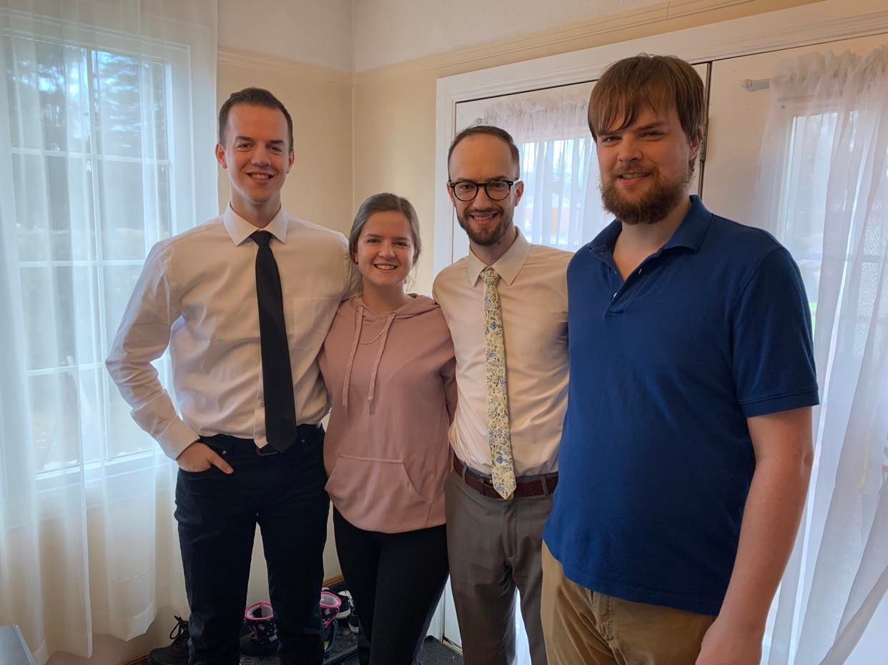

View my contact info
One thing that I love and that I could talk about for hours is the hit TV show, Survivor: how complex the strategy is,
which seasons I think are the best, and how it's a dream of mine to go on the show and have as much fun as possible
while forming meaningful relationships with people.
Browse the Survivor wiki page to learn more
Also, check out this hilarious clip from a Survivor challenge in one of my favourite seasons: Season 30: Worlds Apart
During the 2 years between November, 2018, and November, 2020, I lived in Utah and served as a missionary
for The Church of Jesus Christ of Latter-Day Saints in the
Utah Provo Mission. I experienced some of the happiest moments of my life in those 2 years, and some of the most
demanding. I made life-long friends and experienced things I'll remember forever. Here's a picture from my mission of me with some of my best friends.
Below is a brief resume with my education and relevant experience & skills.
- Education
- Currently studying at BYU in Provo, UT
- 3.93 GPA from BYU-Idaho in 2021
- High School Diploma from Prince Andrew High School in N.S. Canada.
- Work Experience
- Currently employed as a Computer Support Representative at BYU
- Information Technology Support Technician at BYU-Idaho
- Sales Associate at Winners & Homesense in Dartmouth, N.S.
- Skills
- Excel automation (VBA)
- General computer troubleshooting
- SQL
- Working Skillset of Basic Accounting Principles
I have 3 older siblings, and we're all very close. We grew up always hanging out together, making up games to play in the backyard and swimming in our grandparent's lake with our cousins during Summer time. My oldest brother, Jacob, has 2 adorable daughters who I love being an uncle to, and they live in NYC where he works for a hedge fund. My sister Claire lives with her husband Alex in Kentucky where they are both at the University of Kentucky. My brother Josh has remained in Nova Scotia and lives with his wife in a home only 20 minutes from the house we grew up in. In April of 2022 we all attended the funeral of our Nana, and it was the first time we were all in the same room together in over 9 years. Here's a picture we took during that trip.

From left to right:Me, Claire, Jacob, Josh.
Contact: (208) 360-1522 | benjaminmac21@gmail.com
Back to Top